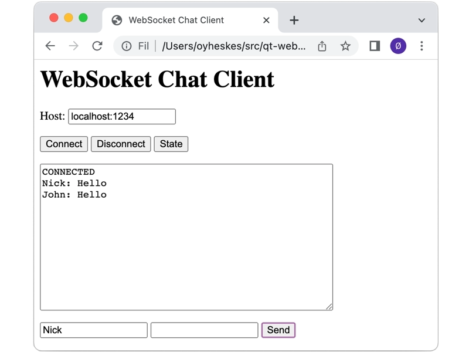

Simple WebSocket Chat
A minimal chat application using the WebSocket protocol.
This application shows how to use the QWebSocket and QWebSocketServer classes to create a minimalist chat application over the WebSocket protocol. The example is a server that allows multiple clients to connect to it to send and receive messages.
By default it listens at localhost port 1234. It keeps track of all clients that are connected to it, and each time one of the clients sends a message to the server, the message is forwarded to all other clients. When a client disconnects, it is removed from the list of clients.

There is also an HTML-client that is used to connect to and disconnect from the server, query about the connection, send messages, and view all the messages sent by other clients.